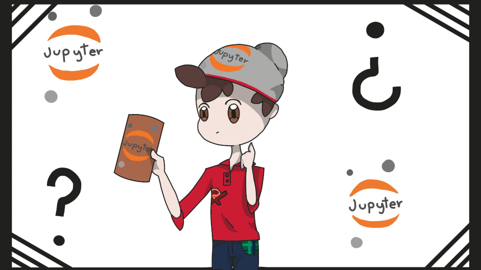

¿Ya has probado los Cuadernos de Jupyter? Te explicamos qué son y cómo te ayudarán en tu próxima investigación.

¿Quieres llevar tus artículos a un formato mas intuitivo, legible y facíl de editar? Jupyter Notebook es una aplicación web que te deja incorporar en tus documentos elementos de código abierto y de texto enriquecido de una forma sencilla y fluida, que además facilita que otras personas colaboren en tu investigación. Utilizar estos elementos permitirá que tanto tu como tus lectores puedan no solamente ver la descripción y resultados de tu analísis de una forma mas gráfica, sino hacerlo en tiempo real, algo especialmente útil para garantizar la reproducibilidad de tus resultados.
El uso de Jupyter Notebook hoy día es bastante común en las comunidades científicas: por ejemplo, la creación de la foto de un agujero negro utilizo un cuaderno de Jupyter, con codigo en https://github.com/achael/eht-imaging), por lo que hay una gran variedad de ejemplos en todo tipo de areas, usualmente disponible en un repositorio publico de GitHub, con los cuales podrás interactuar libremente. Estos documentos son producidos por la aplicación Jupyter Notebook, la cual te explicaremos con mas profundidad a continuación.
¿Que es Jupyter?
Jupyter se refiere a la organización de codigo abierto sin fines de lucro: Project Jupyter, que es la principal organización que desarolla una multitud de proyectos, entornos de ejecución principalmente en Julia, Python y R, de los cuales se construye su nombre. El principal propósito de Jupyter es “apoyar ciencia de datos interactiva y computación científica en todos los lenguajes de programación” 1. De hecho, todos sus proyectos son desarollados de forma abierta en GitHub, bajo la licencia modificada de BSD, y prometen mantener disponibles tanto el software como su codigo, para el uso libre de cualquiera.
Sin duda, la característica más popular de Jupyter Notebook, es ser una aplicación web que permite editar y compartir documentos (llamados "cuadernos de jupyter") que contienen trozos de codigo, visualizaciones, ecuaciones, todas interactivas y ejecutadas en tiempo real. Su integración de los elementos rich media en documentos intuitivos y sencillos de editar la ha convertido en una herramienta muy popular en la elaboración de articulos, analísis e investigaciónes científicas.
Además de Notebook, ofrece un entorno de desarrollo para cuadernos de jupyter, llamado JupyterLab, que posee una interfaz simple y personalizable, y capacidades modulares para que puedas añadir nuevos componentes o plugins según veas necesario.
Que es un Cuaderno de Jupyter?
Un cuaderno de Jupyter es simplemente un archivo .ipynb hecho por la aplicación web, el cual contiene una multitud de ‘celdas’ con codigo, texto Markdown (en formato LaTeX!), o metadatos raw. Al ser interpretado por Jupyter, estas celdas terminan teniendo una apariencia muy similar a la de un documento de texto, y las celdas que contienen codigo son ejecutadas, mostrando la salida stdout dentro de la celda. Es muy común el uso de librerías como matplotlib para mostrar gráficos dentro de estas celdas de código, pero gracias a su versatilidad, puede ser utilizado también para mostrar videos o imágenes que cambién o se actualizen a lo largo del tiempo, para dar enlaces a archivos locales, y el instalar kernels de otros lenguajes amplía sus posibilidades aún más.
Como uso Jupyter?
Si deseas hacer tu propio cuaderno de Jupyter y jugar a experimentar un poco, solamente tienes que ir al sitio web, donde encontrarás varias opciones para probar Jupyter desde una interfaz web, sin tener que instalar nada, con varios lenguajes de programación. Dentro de esta pagina, puedes acceder a enlaces a entornos virtuales prefabricados dentro del sitio MyBinder. Mybinder es un sitio en el cual podrás crear un entorno virtual a partir de un repositorio de github, con el que podrás interactuar y experimentar con tus cuadernos de Jupyter.
Si deseas utilizar Jupyter desde tu computadora, basta con instalarlo via pip o conda. Sin embargo, la popular distribución Anaconda incluye los paquetes necesarios para utilizar Jupyter, y es la opción recomendada por el propio Projecto Jupyter. Simplemente tendrás que dirigirte al enlace de descarga para instalarla. Despues de esto, podrás ejecutar jupyter notebook desde un terminal, y acceder a la interfaz web de Jupyter desde la URL http://localhost:8888 (por defecto).
Quien usa Jupyter?
Jupyter es un proyecto que esta apoyado abiertamente por empresas como Google (de hecho, puedes hacer cuadernos de Jupyter en el propio Google Drive), Microsoft e IBM, además de una diversa cantidad de universidades alrededor del mundo. No es extraño, entonces, que en el propio github se encuentren alrededor de 5 millones de cuadernos de jupyter (según un análisis que utiliza también un cuaderno para mostrar sus resultados! 2), y que abarquen áreas desde la ciencia de datos, estadística o economía, hasta las ciencias sociales o psicología, así como una multitud de listas curadas 3 con una variedad de ejemplos de aplicaciones reales de Jupyter.
Jupyter es, sin duda, una de las iniciativas de ciencia abierta mas prometedoras que hay, con una popularidad inmensa incluso fuera de su area de enfoque, y una accesibilidad bastante impresionante, que permite a científicos de todo tipo de trasfondos empezar a aprovechar de sus capacidades rich media en cuestión de segundos. Y para aquellos que deseen entrar un poco mas profundo en el tema, existe una cantidad de recursos y apoyo dedicado a Jupyter bastante grande 4 para el poco tiempo que ha estado bajo el foco, haciendo de tu aprendizaje algo bastante sencillo e indoloro. Llevar tus investigaciones a otro nivel es cuestión de querer aprender, nada mas!
Comentarios
Comments powered by Disqus